EXTERIOR
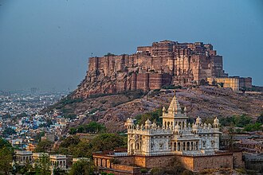
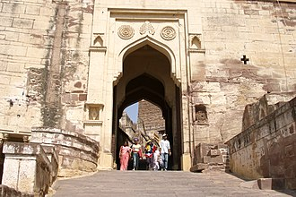
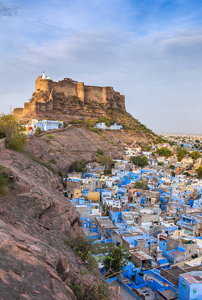
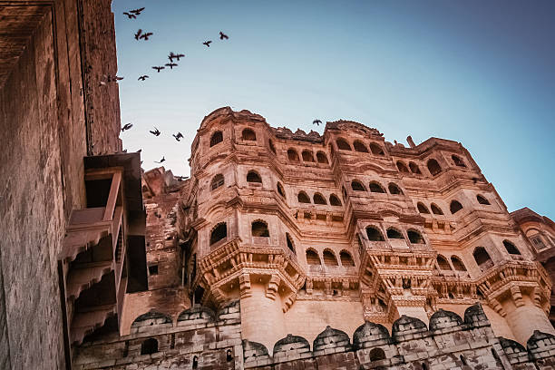
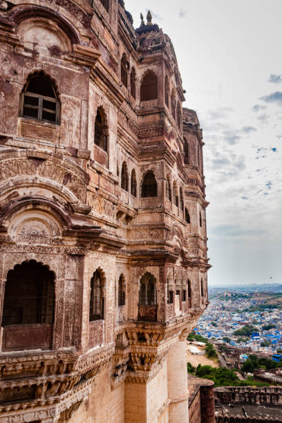
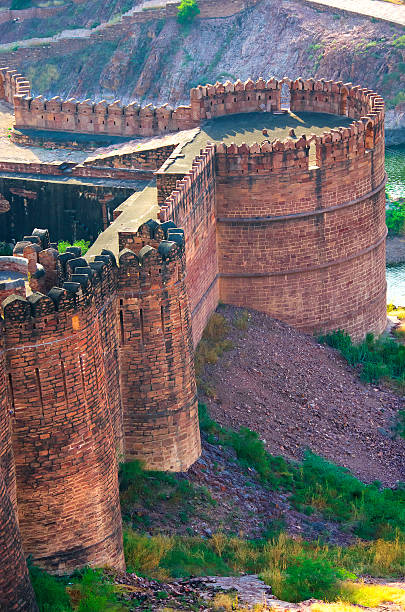
- MYTHS
- Impenetrable Walls: There's a myth that Mehrangarh Fort has impenetrable walls that have never been breached by invaders. While the fort is indeed formidable, it has faced several sieges throughout history, although it has never been conquered.z
- Cursed Fort: Some myths suggest that Mehrangarh Fort is cursed due to the tragedies and misfortunes associated with its construction and history. However, there's no substantial evidence to support these claims, and the fort remains a symbol of pride for the people of Rajasthan.
- Secret Underground Tunnels: There's a myth that Mehrangarh Fort has secret underground tunnels or passages that were used for escape or strategic purposes during sieges. However, no such tunnels have been discovered or confirmed.
- Haunted by Spirits: Like many historical landmarks, there are myths about Mehrangarh Fort being haunted by the spirits of past rulers or soldiers. However, there's no concrete evidence to support these claims, and the fort is primarily a tourist attraction and cultural heritage site.
- Hidden Treasures: It's often believed that Mehrangarh Fort houses hidden treasures, including gold, jewels, and other valuables. Despite various searches, no significant treasures have been found within the fort, leading to the myth of hidden riches waiting to be discovered.
INTERIOR
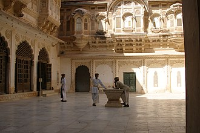
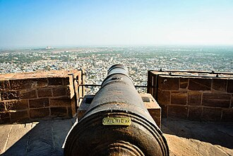
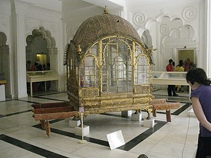
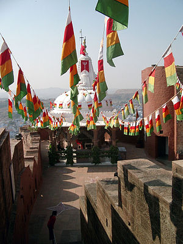
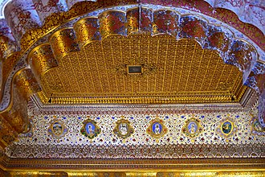
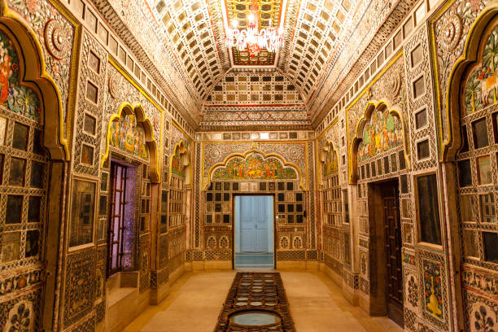
- FACTS
- Icon of Rajasthan's Heritage: Mehrangarh Fort, situated in Jodhpur, Rajasthan, is an iconic symbol of the region's rich cultural heritage and architectural prowess. Its imposing walls and majestic structures narrate the tales of valor, royalty, and architectural ingenuity that have defined Rajasthan for centuries.
- Built by Rao Jodha: Construction of Mehrangarh Fort began in 1459 under the supervision of Rao Jodha, the founder of Jodhpur, who envisioned the fort as a formidable bastion to safeguard his kingdom against external threats.
- Impregnable Defense: Perched atop a rocky hill, Mehrangarh Fort boasts towering walls and strategic ramparts that exemplify its impregnable defense. Despite facing numerous sieges throughout history, the fort has never been conquered, attesting to its military prowess and strategic significance.
- Palatial Architecture: Within its sprawling complex, Mehrangarh Fort houses an impressive array of palaces, courtyards, and temples, each adorned with intricate carvings, ornate balconies, and exquisite interiors that reflect the opulence and grandeur of Rajput architecture.
- Cultural Repository: In addition to its architectural splendor, Mehrangarh Fort serves as a cultural repository, preserving and showcasing a vast collection of artifacts, including weapons, armor, textiles, paintings, and royal regalia, that offer a glimpse into Rajasthan's storied past and rich cultural heritage.